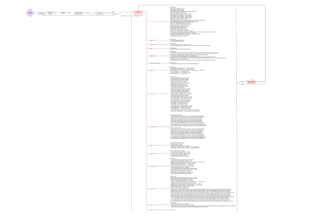
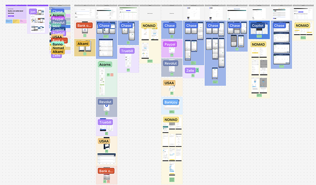
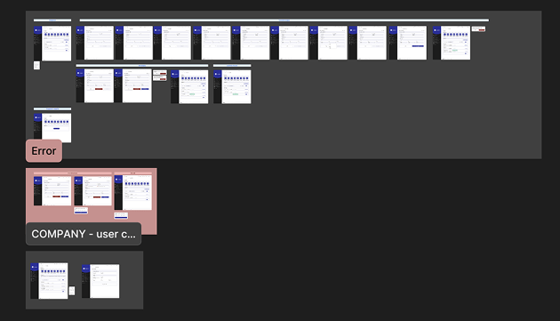
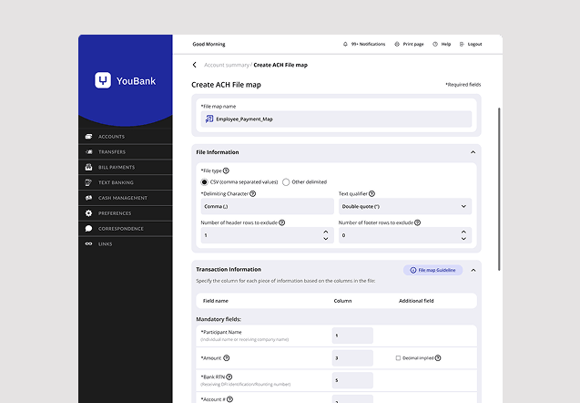
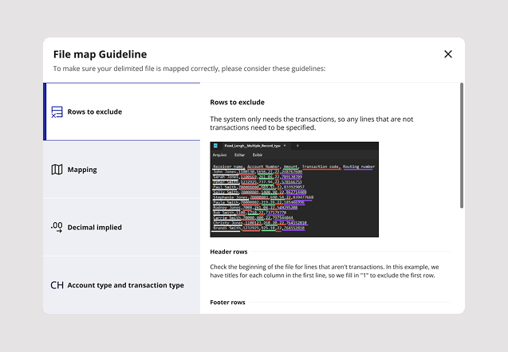
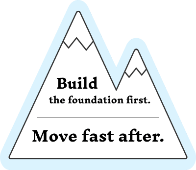
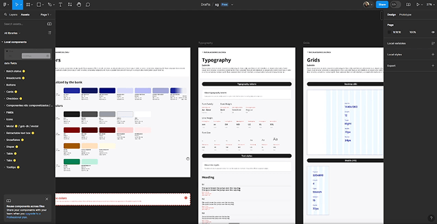
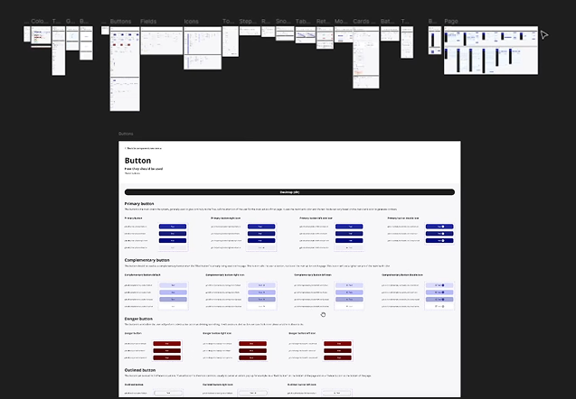
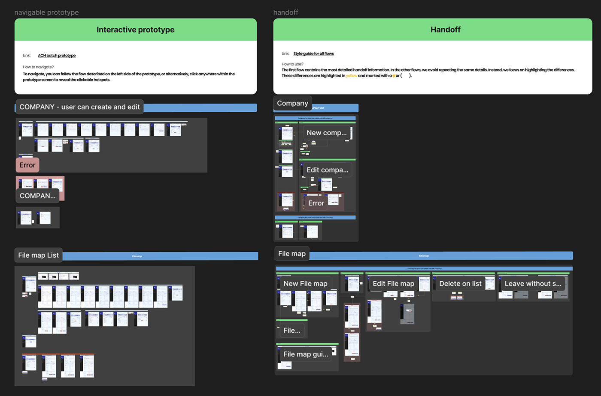
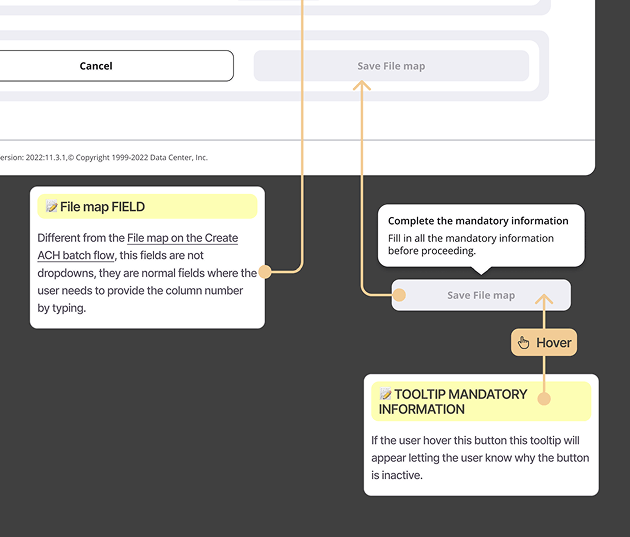

Redesigning complex workflows and building a scalable design system for a platform used by multiple banks across North America.
| Project | Redesign complex workflows in a white-label banking platform — starting with batch payments — and build a design system to support scale. |
| Role | Product Designer — worked with Lorenna (PM) and Will (PD) across research, design, and delivery. |
| Goals | Reduce errors in batch flows · Simplify complex workflows · Improve usability for bank employees and clients · Create consistency through a design system |
| Process | System mapping · User interviews · Usability testing · Benchmarking · Workflow redesign · Design system creation · Handoff and implementation support |
| Outcomes | Reduced errors in batch flows · Improved usability and client confidence · Scalable design system established · Strong positive feedback from clients and stakeholders |
Note: This project is shared with permission. Sensitive details and company name have been omitted.
This was a large-scale platform serving over 200 community banks across North America. The stakes were high — any friction in the system multiplied across thousands of bank employees and their clients.
Batch payments required multiple steps, manual inputs, and precise configuration. Users had to prepare files outside the system, map columns by hand, and fix errors without clear feedback.
This led to confusion, delays, and heavy reliance on support teams — even for routine operations.
This wasn't a greenfield project. The platform was large, used by multiple banks, and already had a visual direction in place when I returned from a short leave.
The challenge wasn't starting from zero — it was aligning and scaling a system that had grown without shared foundations.
Fixing the batch payment flow would solve an immediate, visible problem. But the real opportunity was bigger: building a foundation that would prevent these problems from coming back.
Redesigning workflows and creating a design system had to happen in parallel — one feeding the other.

Full platform mapped before any design decision — each page, flow, and dependency documented

Competitive benchmarking — patterns from similar financial products that informed design decisions

Prototype structure in Figma — organized flows ready for usability testing
The batch payment flow was rebuilt around one principle: don't let users make a mistake they can't recover from. Structured selections replaced open fields. Feedback appeared at the right moment, not after the damage was done.

Detail from the redesigned batch flow — some elements intentionally omitted
Design decision: We added an Excel guideline directly inside the upload step. Most errors happened before the system — people didn't know how to format the file. Instead of letting them fail, we put the instructions exactly where they needed them.

In-context Excel guideline — step-by-step instructions for formatting the batch file, shown only when needed
As the platform grew, so did the inconsistency. Components had multiplied without a governing system. The style guide we created didn't just clean things up — it made future work faster and more reliable.

Consistent UI patterns meant fewer design decisions to relitigate. Better documentation meant development could move without constant questions.

Style guide — video walkthrough of the component library built during delivery

Component detail — usage rules, states, and behavior documented for design and development
Good handoff isn't just specs — it's context. Every screen included interaction notes, hover and click states, edge cases, and the reasoning behind key decisions.
This reduced back-and-forth and kept development moving without needing constant design support.

Handoff documentation — structured specs with component usage, interaction patterns, and error logic

Screen detail with annotations — hover states, click interactions, and developer comments organized for clarity
The redesigned flows reduced friction where it mattered most. Users became more confident completing batch operations independently — without needing support team assistance.
The design system gave the product a foundation it didn't have before. Future features could be built faster, with fewer inconsistencies to resolve.
Improving flows solves the immediate problem. Design systems prevent it from coming back.
In complex systems, you can't separate the two. Every interaction you improve adds friction to the next one if there's no shared foundation underneath.
This wasn't just a redesign. It was the start of a system.